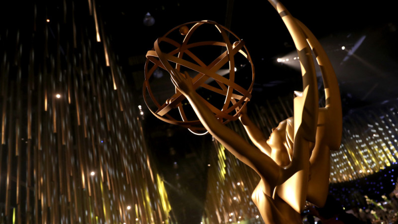
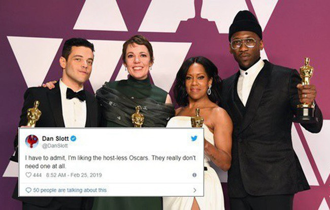

Emmy sẽ tiếp bước Oscar và không có MC?
 Ha Quoc Viet
Ha Quoc Viet

Oscar 2019 được coi là lễ trao giải thành công khi toàn bộ sự chú ý của khán giả đều được dành cho các bộ phim xuất sắc, không phải MC. Liệu, Emmy 2019 sẽ tiếp bước Oscar để tiến hành lễ trao giải theo phương thức mới?
Ban tổ chức lễ troa giải Emmy đang cân nhắc lại cách tổ chức giải một cách hoàn hảo nhất. Cụ thể, khả năng cao lễ trao giải Emmy năm nay sẽ không có MC bởi đã ba tháng trôi qua mà vẫn chưa có một MC nào được xướng tên, nguồn tin của tờ báo Variety xác nhận rằng đây rất có thể là lần đầu tiên lễ trao giải Emmy sẽ diễn ra mà không có MC kể từ năm 2003.
Ý tưởng này cũng được truyền cảm hứng từ Oscar, bởi lễ trao giải này vẫn luôn được đánh giá tích cực và nhận được số điểm rating cực cao dù không hề có MC. Cụ thể, lễ trao giải Oscar 2019 đã tăng 12% người xem nói chung và 13% người xem từ độ tuổi 18-49 nói riêng. Con số này cho thấy việc không có MC xuất hiện không hề ảnh hưởng tới sự chú ý cho những bộ phim bom tấn trong năm như
A star is born, The greenbook, Bohemian Rhapsody,...

Don Mischer Prods. và Done+Dusted là hai đơn vị được BTC giải Emmy giao nhiệm vụ tái sáng tạo lễ trao giải, sau khi mức ratings không ngừng giảm những năm qua. Năm 2018, giải thưởng Emmy trên kênh NBC đạt mức 10.2 nghìn lượt view, đánh dấu mốc lượt view ít nhất lịch sử giải Emmy. Việc không có MC có lẽ sẽ khuấy đảo sự yêu thích của người xem, như cách mà khán giả ủng hộ giải Oscar năm nay.

Danh sách đề cử giải Emmy năm nay sẽ được thông báo vào ngày 16/7 tới và có thể cũng là lúc nhà sản xuất Don Mischer Prods và Done+Dusted đưa ra quyết định cuối cùng về cách thức tiến hành lễ trao giải. Đây cũng là lúc khán giả sẽ biết liệu Shows nào sẽ được vinh danh tại Emmys, đặc biệt là khi những cái tên đã đi tới hồi kết như Game of Thrones hay Veep của HBO, The Big Bang Theory của CBS hay Broad City của Comedy Central đều đang được kỳ vọng sẽ được xướng tên tại lễ trao giải lần này.